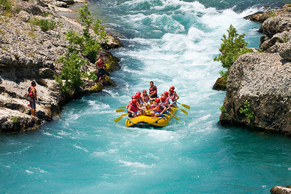

Corredeira Suprema
Nossa Missão é conectar pessoas à energia da natureza por meio do rafting, transformando o medo em coragem e proporcionando aventuras seguras que geram sorrisos, superação e memórias inesquecíveis para a vida toda.
History
Tudo começou no verão de 2012, quando três amigos de infância—Jean, Marina e Thiago—decidiram acampar perto de um rio famoso por suas águas agitadas. Apaixonados por natureza, eles compraram um bote inflável simples e usado apenas para passear pelas partes calmas da água.
Em uma tarde de sol forte, eles erraram o caminho de volta e entrou, sem querer, em um trecho do rio cheio de quedas d'água violentas e pedras gigantes. O que deveria ser um momento de pânico virou pura magia. Trabalhando juntos e remando com toda a força, eles conseguiram desviar dos obstáculos, venceram as ondas enormes e sentiram a energia incrível da natureza. Ao chegarem em um lugar calmo, cansados e encharcados, o medo virou uma alegria sem tamanho. Eles sabiam que a vida deles mudaria dali para frente.
Decididos a dividir essa sensação de superação com o mundo, os três venderam o que tinham para comprar equipamentos profissionais e fazer cursos de segurança e salvamento. No ano seguinte, nascia a Corredeira Suprema, uma empresa criada para mostrar que qualquer pessoa, mesmo sem experiência, é capaz de vencer o medo e viver uma aventura inesquecível na natureza.
Adventure Awaits You!
A aventura está te esperando!